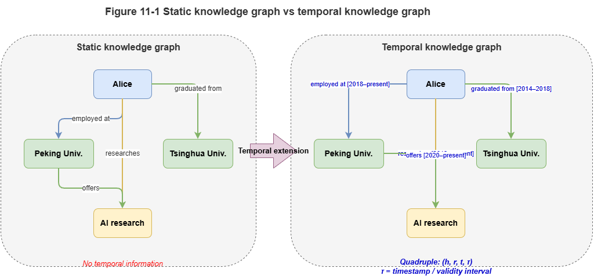
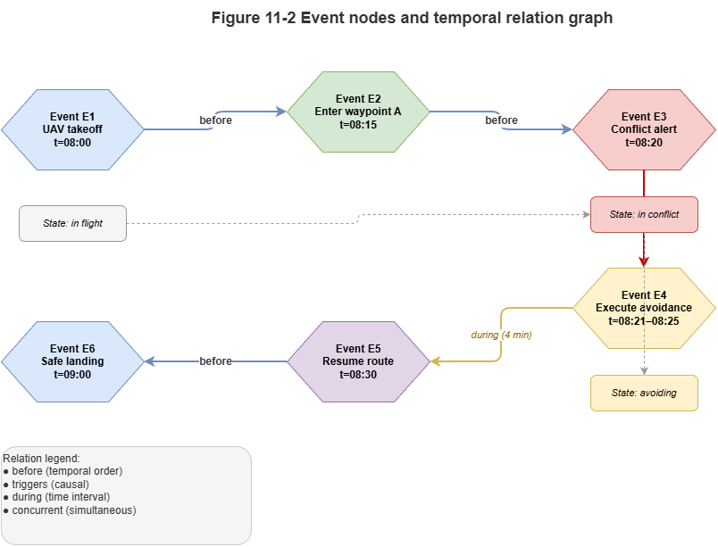
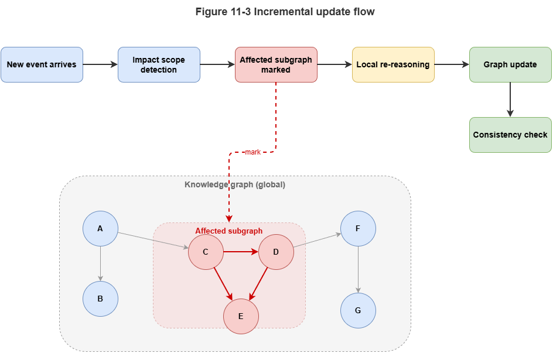

Part III built explainable static risk reasoning on a static KG. UAM is high-frequency dynamic: positions, battery, weather, and airspace status evolve rapidly. Static graphs capture state slices, not continuous evolution. For millisecond conflict detection and cooperative control we cross into Part IV—deep fusion of System 1 and System 2. This chapter lays the foundation: temporal knowledge graphs (TKGs) and core mechanisms of dynamic relational reasoning.
11.1 From static KG to temporal KG#
Static KGs use triples \((h, r, t)\)—head, relation, tail—often treated as permanently true—adequate for stable structure (e.g., “vertiport X lies in grid Y”).
Traffic facts are mostly transient: “UAV A occupies grid 3A” may hold only from \(10{:}05{:}00\) to \(10{:}05{:}30\). TKGs add time explicitly as quadruples:
where \(\tau\) is a timestamp or interval—recording history, current state, and substrate for forecasting graph evolution.
11.2 Time, events, and state transitions#
In TKGs, time is not a stray tag; it couples to state change and events.
Temporal modes:
Time points: Snapshots or instantaneous events—e.g., radar fixes at \(t_0\).
Time intervals: \([t_s, t_e]\) for sustained states—e.g., temporary restrictions.
Events as first-class nodes: Landings, handoffs, etc., with time, participants, and location.
State transitions: Events mutate the graph—edges appear (e.g., “connected to 5G cell”) or disappear as links break.
11.3 Dynamic relations and time-varying edge weights#
Dense swarms induce dynamic, nonlinear interactions; topology shapes collision risk. Model time-varying connectivity and edge weights:
Time-varying connectivity: Communication or threat edges exist only when distance drops below a threshold; they vanish when aircraft separate.
Continuous edge-weight evolution: Even when present, strength changes—e.g., with distance \(d_{ij}(t)\) and relative speed:
Such weights supply quantitative tensors for GNN message passing over continuous time.
11.4 Temporal logic and continuous-time modeling#
To reason about the future, not only record the past, add temporal formalisms and neural time coding.
Temporal logic: At the symbolic layer, linear temporal logic (LTL) or metric temporal logic (MTL) adds operators such as \(\square\) (always), \(\lozenge\) (eventually), and \(\mathcal{U}\) (until). Example safety constraint: before battery exhaustion the UAV must reach a safe landing zone—compilable to graph validators as hard constraints.
Continuous time and encodings: Irregular sampling requires mapping time gaps \(\Delta t\) to continuous features. A common encoding:
Combined with neural ODEs, one can interpolate and roll forward continuous motion between sampled graph states.
11.5 Event-driven reasoning and dynamic updates#
City-scale TKGs face computational blow-up if thousands of UAVs mutate the graph every second under full recomputation. Use event-driven processing and incremental updates:
Local graph evolution: On new telemetry, recompute affected subgraphs, not the whole city graph.
Streamed messaging: Trigger GNN or rule layers only when new temporal edges (e.g., “UAV A enters grid B”) cross airspace thresholds.
11.6 Fit of dynamic graphs for traffic and flight systems#
TKGs suit low-altitude and flight governance because they mirror physics:
Spatiotemporal coupling: One topology for instantaneous positions, predicted trajectories, and static obstacles.
Causality and traceability: Time-sliced histories support counterfactual analysis and accountability after incidents.
Bridging symbols and physics: Continuous trajectories discretize into timed, structured networks—setting the stage for GNN deployment on TKGs and multi-agent coordination in the next chapter.
Chapter summary#
We explained why static KGs miss high-frequency dynamics; TKGs add time via quadruples; events and transitions unify temporal semantics; dynamic relations and time-varying weights quantify interaction strength; temporal logic plus continuous encodings link symbolic time constraints to neural representations; event-driven incremental updates avoid full-graph recomputation; TKGs connect continuous physics to structured reasoning in one state space.
Key concepts#
Temporal knowledge graph: Dynamic KG with explicit time dimension.
Event nodes: Reifying processes with time, place, and participants.
Time-varying edge weights: Relation strength that changes over time.
Temporal logic: Formal “always / eventually / until” constraints.
Incremental update: Local recomputation on affected subgraphs only.
Study questions#
Why is hanging time merely as a node attribute often insufficient for dynamic reasoning?
What does time-varying weighting contribute to multi-agent modeling and risk propagation?
Without event-driven incremental updates, what breaks at city-scale TKG operation?
Case study#
UAV transitioning from a normal corridor to an emergency detour corridor—time slices for aircraft, corridor state, and applicable rules, showing state transitions, event triggers, and traceability.
Figure suggestions#
Figure 11-1: Structural contrast—static KG vs. TKG.

Figure 11-2: Time points, intervals, event nodes, and transitions.

Figure 11-3: Event-driven incremental update over an affected subgraph.

Formula index#
Temporal quadruple: \((h, r, t, \tau)\)
Time-varying weight: \(w_{ij}(t) = \exp(-\lambda\,d_{ij}(t))\)
Time encoding: \(\Phi(\Delta t)\) (see §11.4)
Theme: elevating time from annotation to reasoning structure.
References#
Trivedi, R., Dai, H., Wang, Y., & Song, L. (2017). Know-Evolve: Deep Temporal Reasoning for Dynamic Knowledge Graphs. Proceedings of the 34th International Conference on Machine Learning (ICML).
Kazemi, S. M., et al. (2020). Representation Learning for Dynamic Graphs: A Survey. Journal of Machine Learning Research, 21(70), 1–73.
Pnueli, A. (1977). The Temporal Logic of Programs. Proceedings of the 18th Annual Symposium on Foundations of Computer Science (FOCS), 46–57.
Chen, R. T. Q., Rubanova, Y., Bettencourt, J., & Duvenaud, D. (2018). Neural Ordinary Differential Equations. Advances in Neural Information Processing Systems (NeurIPS).
Rossi, E., Chamberlain, B., Frasca, F., Eynard, D., Monti, F., & Bronstein, M. (2020). Temporal Graph Networks for Deep Learning on Dynamic Graphs. arXiv preprint arXiv:2006.10637.